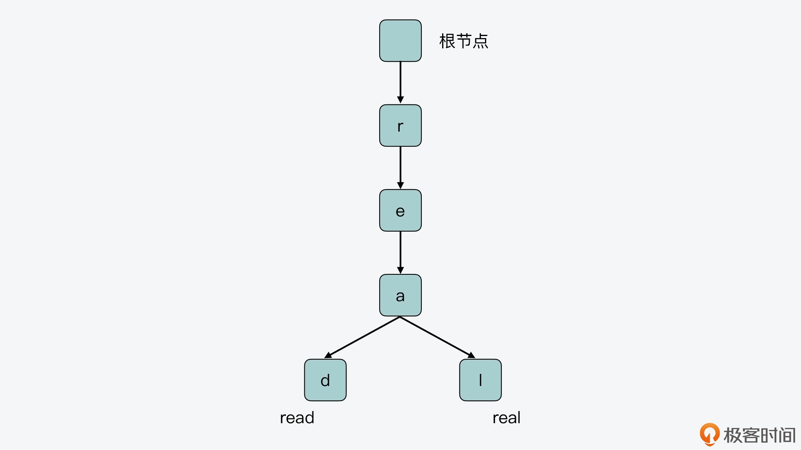
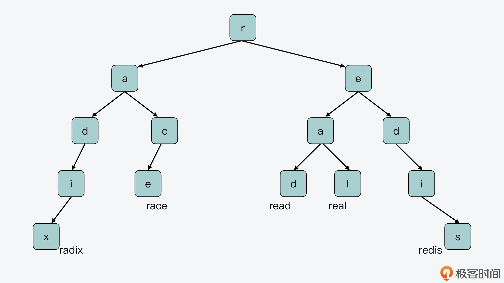
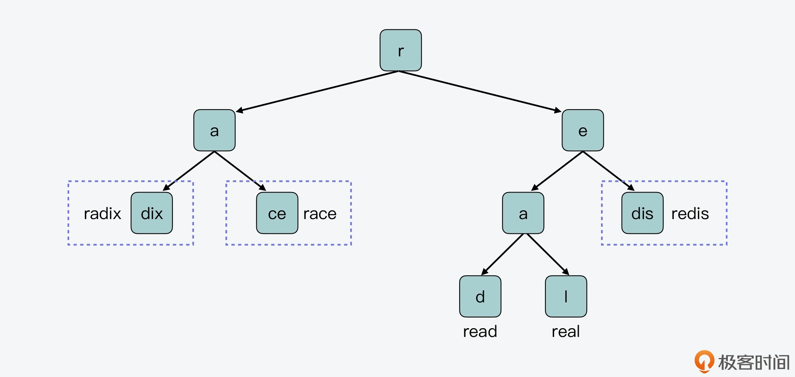
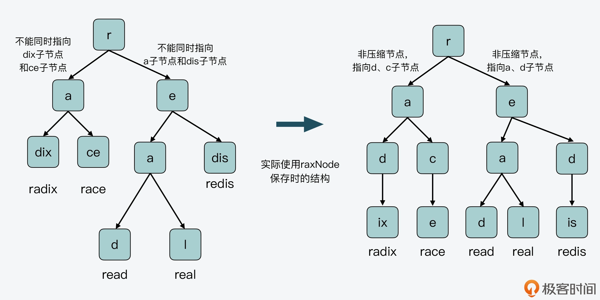

- 00 开篇词 阅读Redis源码能给你带来什么？.md
- 01 带你快速攻略Redis源码的整体架构.md
- 02 键值对中字符串的实现，用char还是结构体？.md
- 03 如何实现一个性能优异的Hash表？.md
- 04 内存友好的数据结构该如何细化设计？.md
- 05 有序集合为何能同时支持点查询和范围查询？.md
- 06 从ziplist到quicklist，再到listpack的启发.md
- 07 为什么Stream使用了Radix Tree？.md
- 08 Redis server启动后会做哪些操作？.md
- 09 Redis事件驱动框架（上）：何时使用select、poll、epoll？.md
- 10 Redis事件驱动框架（中）：Redis实现了Reactor模型吗？.md
- 11 Redis事件驱动框架（下）：Redis有哪些事件？.md
- 12 Redis真的是单线程吗？.md
- 13 Redis 6.0多IO线程的效率提高了吗？.md
- 14 从代码实现看分布式锁的原子性保证.md
- 15 为什么LRU算法原理和代码实现不一样？.md
- 16 LFU算法和其他算法相比有优势吗？.md
- 17 Lazy Free会影响缓存替换吗？.md
- 18 如何生成和解读RDB文件？.md
- 19 AOF重写（上）：触发时机与重写的影响.md
- 20 AOF重写（下）：重写时的新写操作记录在哪里？.md
- 21 主从复制：基于状态机的设计与实现.md
- 22 哨兵也和Redis实例一样初始化吗？.md
- 23 从哨兵Leader选举学习Raft协议实现（上）.md
- 24 从哨兵Leader选举学习Raft协议实现（下）.md
- 25 PubSub在主从故障切换时是如何发挥作用的？.md
- 26 从Ping-Pong消息学习Gossip协议的实现.md
- 27 从MOVED、ASK看集群节点如何处理命令？.md
- 28 Redis Cluster数据迁移会阻塞吗？.md
- 29 如何正确实现循环缓冲区？.md
- 30 如何在系统中实现延迟监控？.md
- 31 从Module的实现学习动态扩展功能.md
- 32 如何在一个系统中实现单元测试？.md
- 结束语 Redis源码阅读，让我们从新开始.md
07 为什么Stream使用了Radix Tree？
这节课，我们继续从底层数据结构的视角出发，来聊聊 Redis 中的 Stream 数据类型是如何保存消息的。
Redis 从 5.0 版本开始支持提供 Stream 数据类型，它可以用来保存消息数据，进而能帮助我们实现一个带有消息读写基本功能的消息队列，并用于日常的分布式程序通信当中。我在讲【如何使用 Redis 实现消息队列】的时候，曾介绍过 Stream。当时，有不少同学就说想学习了解下 Stream 的实现，以便掌握 Stream 内部结构的操作特点，但自己对 Stream 类型不太熟悉，不知道 Stream 底层是采用怎样的数据结构来保存消息数据的。
其实，为了节省内存空间，在 Stream 数据类型的底层数据结构中，采用了 Radix Tree 和 listpack 两种数据结构来保存消息。我在【第 6 讲】已经给你介绍过了 listpack，它是一个紧凑型列表，在保存数据时会非常节省内存。
所以今天这节课，我就来给你介绍下 Stream 用到的另一个数据结构 Radix Tree。这个数据结构的最大特点是适合保存具有相同前缀的数据，从而实现节省内存空间的目标，以及支持范围查询。
同时，和常见的 B 树或 B+ 树类似，Radix Tree 也是一种重要的树型结构，在操作系统内核和数据库中也有应用。所以，了解 Radix Tree 的设计与实现，既可以帮助我们掌握 Stream 的实现思路，还可以让我们把 Radix Tree 应用到需要节省内存的有序树型索引场景中，进一步解决具有公共前缀的大量数据保存时的内存开销问题。
好，那么接下来，我们先来了解下 Stream 保存的消息数据的特征，这也是 Redis 使用 Radix Tree 和 listpack 作为底层结构保存消息的重要考虑因素。
Stream 消息数据的特征
首先，Stream 作为消息队列，它保存的消息通常具有以下两个特征：
- 一条消息由一个或多个键值对组成；
- 每插入一条消息，这条消息都会对应一个消息 ID。
我们一般会让 Redis 服务器自动生成递增的消息 ID。此时，消息 ID 由时间戳和序号组成。其中，时间戳是消息插入时，以毫秒为单位的服务器当时时间，序号是插入消息在当前毫秒内的序号。
比如，我在 Redis 实例中执行以下操作，可以向名为 devmsg 的消息流中，连续插入 5 条消息。其中，每条消息记录的是某个设备 ID 对应的设备温度信息。
127.0.0.1:6379> XADD devmsg * dev 3 temp 26
"1628172536845-0"
127.0.0.1:6379> XADD devmsg * dev 5 temp 28
"1628172545411-0"
127.0.0.1:6379> XADD devmsg * dev 8 temp 24
"1628172553528-0"
127.0.0.1:6379> XADD devmsg * dev 1 temp 25
"1628172560442-0"
127.0.0.1:6379> XADD devmsg * dev 5 temp 26
"1628172565683-0"
从上面的插入数据和返回结果中，我们可以看到，对应 Stream 类型来说，它需要保存的数据也具有两个特征：
- 连续插入的消息 ID，其前缀有较多部分是相同的。比如，刚才插入的 5 条消息，它们消息 ID 的前 8 位都是 16281725。
- 连续插入的消息，它们对应键值对中的键通常是相同的。比如，刚才插入的 5 条消息，它们消息中的键都是 dev 和 temp。
那么，针对 Stream 的这两个数据特征，我们该设计使用什么样的数据结构来保存这些消息数据呢？
你可能会想到使用哈希表，一个消息 ID 对应哈希表中的一个 key，消息内容对应这个 key 的 value。但是，就像刚才介绍的数据特征一样，消息 ID 和消息中的键经常会有重复的部分。如果使用哈希表，就会导致有不少冗余数据，这会浪费 Redis 宝贵的内存空间。
因此，为了充分节省内存空间，Stream 使用了两种内存友好的数据结构：listpack 和 Radix Tree。其中，消息 ID 是作为 Radix Tree 中的 key，消息具体数据是使用 listpack 保存，并作为 value 和消息 ID 一起保存到 Radix Tree 中。
你可以看看下面的 Stream 结构体定义，其中，消息就是使用 Radix Tree 类型的结构*rax来保存的。
typedef struct stream {
rax *rax; //保存消息的Radix Tree
uint64_t length; //消息流中的消息个数
streamID last_id; //当前消息流中最后插入的消息的ID
rax *cgroups; //当前消息流的消费组信息，也是用Radix Tree保存
} stream;
好了，那么 Radix Tree 的结构到底是怎样的呢？下面我们就来学习下 Radix Tree 的基本结构。
Radix Tree 的基本结构
Radix Tree 是属于前缀树的一种类型。前缀树也称为 Trie Tree，它的特点是，保存在树上的每个 key 会被拆分成单字符，然后逐一保存在树上的节点中。前缀树的根节点不保存任何字符，而除了根节点以外的其他节点，每个节点只保存一个字符。当我们把从根节点到当前节点的路径上的字符拼接在一起时，就可以得到相应 key 的值了。
下面这张图展示了一个简单的前缀树，你可以看下。图中的前缀树有两个叶子节点，将根节点到这两个叶子节点的路径上，对应的字符拼接起来后，就得到了两个 key：read 和 real。

另外从图中，我们还可以看到，前缀树是把保存的 key 的公共前缀（即 r、e、a）独立出来共享使用的。这样一来，就可以避免在树中对相同的字符做重复存储。
而如果不采用这种方法，只是把这两个 key 保存在哈希表中，那么 key 的相同前缀就会被单独存储，这样就会导致内存空间的浪费。所以，相比哈希表的保存方式，前缀树能够很好地节省内存空间，这对于 Redis 来说是非常重要的。
前缀树的不足和 Radix Tree 的改进
当然，前缀树在每个节点中只保存一个字符，这样做的好处就是可以尽可能地共享不同 key 的公共前缀。但是，这也会导致 key 中的某些字符串，虽然不再被共享，可仍然会按照每个节点一个字符的形式来保存，这样反而会造成空间的浪费和查询性能的降低。
我来给你举个例子，假设有 5 个 key，分别是 radix、race、read、real 和 redis，它们在前缀树上的布局如下图所示。

对于“redis”来说，因为它和“read”“real”共享“r”和“e”，和“radix”“race”共享“r”，也就是说“r”和“e”节点都分别指向多个子节点。类似的，“real”和“read”共享了“r”“e”和“a”前缀，“a”节点也指向了多个子节点。所以，在前缀树的节点中单独保存“r”“e”“a”是很有必要的。
但是，我们还是看“redis”这个 key，除了“r”“e”字符和其他 key 有共享外，“re”后面的“dis”没有再被其他 key 共享了。所以此时，其实并没有必要再对“dis”进行拆分，将其分成单个字符“d”“i”和“s”来保存，而是可以把它们合并在一起保存。
那么到这里，你就可以发现，在前缀树上，确实有的字符需要单独保存，用来作为不同 key 的公共前缀进行共享，但其实有的单字符节点可以和其他单字符节点进行合并，这样能进一步节省空间。
而从一个更加通用的角度来说，在前缀树的某个节点开始，如果从该节点到另外一个节点之间，每一个节点都只有一个子节点，那就表明这些节点对应的字符，并没有和其他节点共享了。那么如果我们还是按照前缀树的方式，为每一个字符创建一个节点进行保存的话，一是会浪费内存空间，二是在进行查询时，还需要逐一匹配每个节点表示的字符，对查询性能也会造成影响。
所以，在前缀树中，如果一系列单字符节点之间的分支连接是唯一的，那么这些单字符节点就可以合并成一个节点，而这种结构的树，就正是 Radix Tree，也被称为基数树。相比前缀树来说，Radix Tree 既可以节约内存的使用，同时还可以提高查询访问的效率。
我画了下面这张图，展示了刚才介绍的前缀树上的 5 个 key（radix、race、read、real 和 redis），在 Radix Tree 上的布局，你可以对照着看下它们在前缀树布局上的不同之处。

Radix Tree 数据结构
好了，从刚才介绍的 Radix Tree 的结构中，我们其实可以发现，在 Radix Tree 中存在两类节点。
第一类节点是非压缩节点，这类节点会包含多个指向不同子节点的指针，以及多个子节点所对应的字符，比如前面 Radix Tree 例子中的节点“r”，这个节点就包含了指向子节点“a”和“e”的指针。同时，如果从根节点到一个非压缩节点的路径上的字符串，已经对应了 Radix Tree 中保存的一个 key，那么这个非压缩节点中还包含了指向这个 key 对应的 value 的指针。
比如，下面这张图就显示了刚才例子中的节点 r，它是一个非压缩节点，指向了两个子节点，这两个子节点对应的字符分别是“a”和“e”，这个非压缩节点包含了指向子节点 a 和 e 的指针。此外，非压缩节点头部保存的 HDR，是 Radix Tree 节点数据结构中的元数据，我一会儿会给你具体介绍它。

第二类节点是压缩节点，这类节点会包含一个指向子节点的指针，以及子节点所代表的合并的字符串。比如前面 Radix Tree 例子中的节点 e，这个节点指向的子节点包含的字符串就是合并的字符串“dis”。和非压缩节点类似，如果从根节点到一个压缩节点的路径上的字符串，已经对应了 Radix Tree 中保存的一个 key，那么，这个压缩节点中还包含指向这个 key 对应的 value 的指针。
下图展示的就是一个压缩节点，它包含一个指向子节点的指针，这个子节点表示的合并字符串是“is”，所以在当前这个压缩节点中，保存了合并字符“is”。而和非压缩节点类似，压缩节点的头部 HDR，保存的也是 Radix Tree 节点结构中的元数据。

既然，这两类节点的头部 HDR 中都保存了元数据，下面我们就来看看，这些元数据都包括了什么内容。
首先，我们需要了解下 Radix Tree 的节点数据结构。Radix Tree 节点的数据结构是由rax.h文件中的 raxNode 定义的，如下所示：
typedef struct raxNode {
uint32_t iskey:1; //节点是否包含key
uint32_t isnull:1; //节点的值是否为NULL
uint32_t iscompr:1; //节点是否被压缩
uint32_t size:29; //节点大小
unsigned char data[]; //节点的实际存储数据
} raxNode;
该结构中的成员变量包括 4 个元数据，这四个元数据的含义分别如下。
- iskey：表示从 Radix Tree 的根节点到当前节点路径上的字符组成的字符串，是否表示了一个完整的 key。如果是的话，那么 iskey 的值为 1。否则，iskey 的值为 0。不过，这里需要注意的是，当前节点所表示的 key，并不包含该节点自身的内容。
- isnull：表示当前节点是否为空节点。如果当前节点是空节点，那么该节点就不需要为指向 value 的指针分配内存空间了。
- iscompr：表示当前节点是非压缩节点，还是压缩节点。
- size：表示当前节点的大小，具体值会根据节点是压缩节点还是非压缩节点而不同。如果当前节点是压缩节点，该值表示压缩数据的长度；如果是非压缩节点，该值表示该节点指向的子节点个数。
这 4 个元数据就对应了刚才介绍的压缩节点和非压缩节点头部的 HDR，其中，iskey、isnull 和 iscompr 分别用 1 bit 表示，而 size 占用 29 bit。
另外，从 raxNode 结构体中，我们还可以看到，除了元数据，该结构体中还有 char 类型数组 data。我们知道，data 是用来保存实际数据的。不过，这里保存的数据会根据当前节点的类型而有所不同：
- 对于非压缩节点来说，data 数组包括子节点对应的字符、指向子节点的指针，以及节点表示 key 时对应的 value 指针；
- 对于压缩节点来说，data 数组包括子节点对应的合并字符串、指向子节点的指针，以及节点为 key 时的 value 指针。
好了，到这里，你可能已经发现，在 raxNode 的实现中，无论是非压缩节点还是压缩节点，其实具有两个特点：
- 它们所代表的 key，是从根节点到当前节点路径上的字符串，但并不包含当前节点；
- 它们本身就已经包含了子节点代表的字符或合并字符串。而对于它们的子节点来说，也都属于非压缩或压缩节点，所以，子节点本身又会保存，子节点的子节点所代表的字符或合并字符串。
而这两个特点就给 Radix Tree 实际保存数据时的结构，带来了两个方面的变化。
一方面，Radix Tree 非叶子节点，要不然是压缩节点，只指向单个子节点，要不然是非压缩节点，指向多个子节点，但每个子节点只表示一个字符。所以，非叶子节点无法同时指向表示单个字符的子节点和表示合并字符串的子节点。
我给你举个例子，在下图的左半部分，节点 r 的子节点 a，它的两个子节点表示的都是合并字符串“dix”和“ce”。因此，节点 a 的 raxNode 结构，无法同时指向 dix 子节点和 ce 子节点。类似的，r 节点的子节点 e，它的两个子节点，一个表示的是单字符“a”，另一个表示的是合并字符串“dis”，节点 e 的 raxNode 结构也无法同时指向这两个子节点。
所以，在实际使用 raxNode 结构保存数据时，节点 dix 会被拆为节点 d 和 ix，节点 ce 会被拆为节点 c 和 e，节点 dis 会被拆为节点 d 和 is，如下图的右半部分所示。这样一来，节点 r 的子节点 a 和 e，就可以用非压缩节点的结构来保存了。

我们再来看另一方面，对于 Radix Tree 的叶子节点来说，因为它没有子节点了，所以，Redis 会用一个不包含子节点指针的 raxNode 节点来表示叶子节点，也就是说，叶子节点的 raxNode 元数据 size 为 0，没有子节点指针。如果叶子节点代表了一个 key，那么它的 raxNode 中是会保存这个 key 的 value 指针的。
为了便于你理解非压缩节点、压缩节点和叶子节点的 raxNode 结构内容，我画了下面这张图，你可以看下。

这张图上显示了 Radix Tree 最右侧分支的 4 个节点 r、e、d、is 和它们各自的 raxNode 内容。其中，节点 r、e 和 d 都不代表 key，所以它们的 iskey 值为 0，isnull 值为 1，没有为 value 指针分配空间。
节点 r 和 e 指向的子节点都是单字符节点，所以它们不是压缩节点，iscompr 值为 0。而节点 d 的子节点包含了合并字符串“is”，所以该节点是压缩节点，iscompr 值为 1。最后的叶子节点 is，它的 raxNode 的 size 为 0，没有子节点指针。不过，因为从根节点到节点 is 路径上的字符串代表了 key“redis”，所以，节点 is 的 value 指针指向了“redis”对应的 value 数据。
这里，你需要注意的是，为了满足内存对齐的需要，raxNode 会根据保存的字符串长度，在字符串后面填充一些字节，也就是图中的 padding 部分。
好了，到这里，你应该就理解了 Radix Tree 中不同节点的 raxNode 结构内容。那么接下来，我们再来了解下 Radix Tree 的基本操作函数。
Radix Tree 的操作函数
Radix Tree 的基本操作函数都是在rax.c文件中实现的，主要有以下几种。
- raxNew 函数
该函数的原型如下，它会调用 rax_malloc 函数分配一个新的 rax 结构体空间。
rax *raxNew(void)
rax 结构体的定义如下所示，其中包含了 Radix Tree 中的 key 个数、节点个数，以及指向头节点的指针，而 raxNew 函数会调用 raxNewNode 函数来创建头节点。
typedef struct rax {
raxNode *head; //Radix Tree的头指针
uint64_t numele; //Radix Tree中key的个数
uint64_t numnodes; //Radix Tree中raxNode的个数
} rax;
- raxNewNode 函数
该函数的原型如下，用来创建一个新的非压缩节点。它的参数 children 表示该非压缩节点的子节点个数，参数 datafield 表示是否要为 value 指针分配空间。
raxNode *raxNewNode(size_t children, int datafield)
这里，你需要注意的是，压缩节点的创建并不是通过 raxNewNode 函数来完成的，而是通过 raxCompressNode 函数来实现的。
- raxGenericInsert 函数
该函数原型如下，用来向 Radix Tree 中插入一个长度为 len 的字符串 s。
int raxGenericInsert(rax *rax, unsigned char *s, size_t len, void *data, void **old, int overwrite)
- raxLowWalk 函数
该函数原型如下，当需要在 Radix Tree 中查找、插入或是删除节点时，都会调用该函数。
static inline size_t raxLowWalk(rax *rax, unsigned char *s, size_t len, raxNode **stopnode, raxNode ***plink, int *splitpos, raxStack *ts)
- raxGetData/raxSetData 函数
这两个函数的原型如下所示，它们分别用来获得 raxNode 中保存的 value 指针，以及设置 raxNode 中保存的 value 指针。
void *raxGetData(raxNode *n)
void raxSetData(raxNode *n, void *data)
好了，了解了 Radix Tree 的基本操作函数后，我们最后再来看下，Stream 是如何把 Radix Tree 和 listpack 组合起来使用的。
Stream 如何组合使用 Radix Tree 和 listpack？
我们知道，Stream 保存的消息数据，按照 key-value 形式来看的话，消息 ID 就相当于 key，而消息内容相当于是 value。也就是说，Stream 会使用 Radix Tree 来保存消息 ID，然后将消息内容保存在 listpack 中，并作为消息 ID 的 value，用 raxNode 的 value 指针指向对应的 listpack。
这里我放了一张图，展示了 Stream 结构、rax、raxNode 以及 listpack 相互之间的关系。注意，在这张图中，我们假设就只有一个 streamID 作为 key。

我们可以看到，stream 结构体中的 rax 指针，指向了 Radix Tree 的头节点，也就是 rax 结构体。rax 结构体中的头指针进一步指向了第一个 raxNode。因为我们假设就只有一个 streamID，暂时没有其他 streamID 和该 streamID 共享前缀，所以，当前这个 streamID 就可以用压缩节点保存。
然后，第一个 raxNode 指向了下一个 raxNode，也是 Radix Tree 的叶子节点。这个节点的 size 为 0，它的 value 指针指向了实际的消息内容。
而在消息内容这里，是使用了 listpack 进行保存的。你可以看到，listpack 中是使用了 master entry 来保存键值对类型消息中的键，而值会在 master entry 后面保存。这种保存方式其实也是为了节省内存空间，这是因为很多消息的键是相同的，保存一份就行。关于在 Stream 中，将消息的键和值分开保存到 listpack 中的这种设计方法，我会在后面的课程中继续给你详细介绍。
小结
今天这节课上，我带你学习了 Redis Stream 数据类型的底层实现结构。现在你已经知道，Stream 最主要的作用就是可以用来保存消息数据。
每条消息都会有一个时间戳和序号组成的消息 ID，以及键值对组成的消息内容。而因为不同消息 ID 中的时间戳，通常会共享部分相同的前缀，如果采用诸如哈希表的结构来保存消息，每个消息 ID 都单独保存，容易造成空间浪费。因此，Stream 为了节省内存空间，采用了 Radix Tree 来保存消息 ID，同时使用 listpack 来保存消息本身的内容。
在 Radix Tree 的设计实现中，它的整体结构和节点数据结构是理解 Radix Tree 的重要基础，所以，你要重点关注 Radix Tree 的非压缩节点和压缩节点类型，以及源码中的实际数据结构 raxNode。
另外，为了方便你更好地掌握非压缩节点和压缩节点，我再给你总结下它们的相同之处和区别，你也可以来整体回顾下。
它们的相同之处在于：
- 都有保存元数据的节点头 HDR；
- 都会包含指向子节点的指针，以及子节点所代表的字符串。
- 从根节点到当前节点路径上的字符串如果是 Radix Tree 的一个 key，它们都会包含指向 key 对应 value 的指针。
不同之处在于：
- 非压缩节点指向的子节点，每个子节点代表一个字符，非压缩节点可以指向多个子节点；
- 压缩节点指向的子节点，代表的是一个合并字符串，压缩节点只能指向一个子节点。
而除了学习 raxNode，我还给你介绍了下 Radix Tree 中几个基本操作函数的作用，并展示了 Stream 类型是如何把消息 ID 和消息内容，分别保存在 Radix Tree 和 listpack 中的。
这里你要注意的是，因为 Radix Tree 在保存具有公共前缀的数据时，能有效节省内存开销。同时，Radix Tree 本身也是有序的树型索引，可以支持单点和范围查询。所以，Redis 把消息 ID 保存在 Radix Tree 中，既可以节省内存空间，也能高效支持消息 ID 的查询。而 listpack 本身是紧凑列表，在保存大量消息内容的同时，也能有效节省内存。
所以我希望，你能通过 Stream 对 Radix Tree 和 listpack 的使用，举一反三，把它们用在相应的消息存取或是大量字符串存取的场景中。
每课一问
作为有序索引，Radix Tree 也能提供范围查询，那么与我们日常使用的 B+ 树，以及【第 5 讲】中介绍的跳表相比，你觉得 Radix Tree 有什么优势和不足吗？
欢迎在留言区分享你的答案和思考过程，如果觉得有收获，也欢迎你把今天的内容分享给更多的朋友。
© 2019 - 2023 Liangliang Lee. Powered by Vert.x and hexo-theme-book.